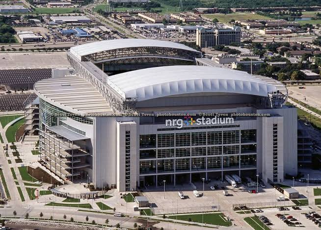
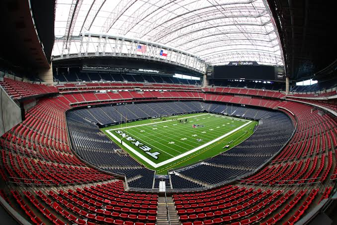
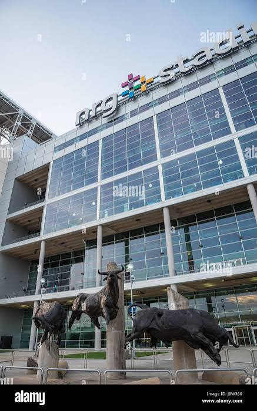

NRG Stadium



Houston will welcome World Cup fans at NRG Stadium, a large venue with experience hosting major national and international events.
The stadium's covered design and modern facilities make it well suited for tournament football.
Houston's diverse fan base and strong sports culture add to its importance as a host city.